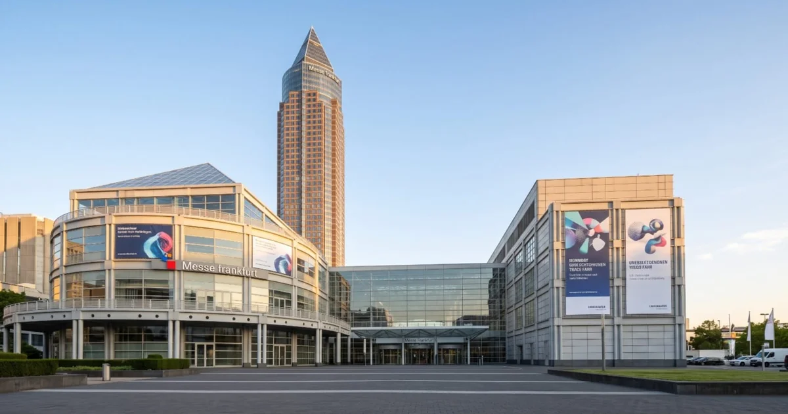
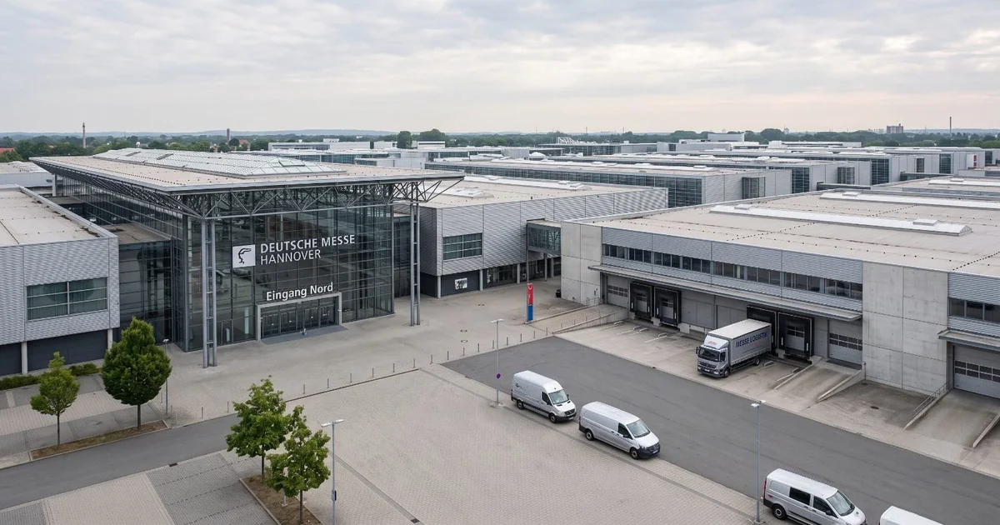
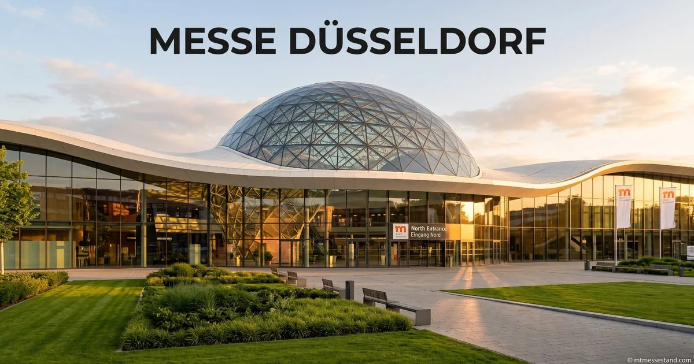
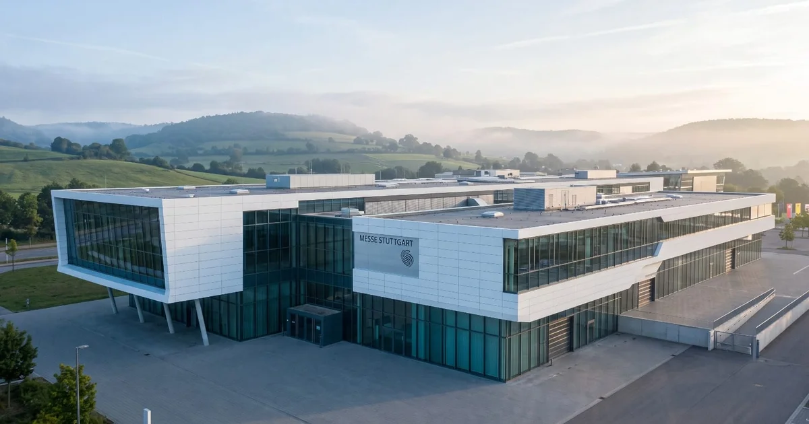
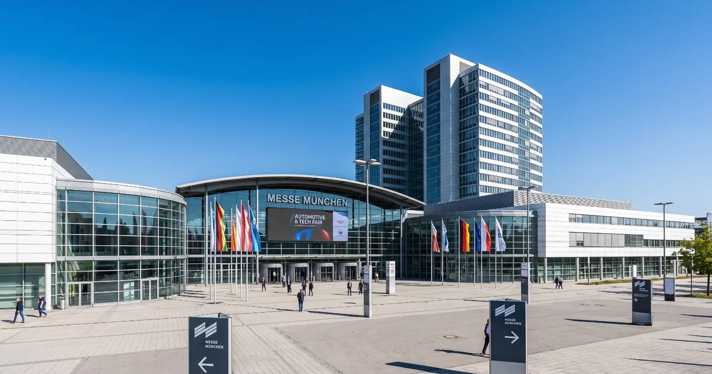

Hidden Costs of Building an Exhibition Stand in Germany
A comprehensive guide compiled from the technical manuals of Messe Frankfurt, Hannover, Düsseldorf, Stuttgart, Munich and Berlin — backed by field experience.

Germany is Europe's largest trade fair market. Over 180 international trade fairs are held annually; Messe Frankfurt alone organizes more than 50 trade fairs. The total cost of a 100-square-meter stand ranges from EUR 115,000 to EUR 205,000, depending on the fair and city (AUMA 2026 Exhibitor Cost Survey).
However, this figure is just the starting point. It covers space rental, stand construction, and basic services. There are dozens of operational cost items not included in this figure — items most exhibitors only learn about once they arrive at the fairground.
At MT Messe Stand, we saw a client in Hannover incur EUR 4,200 in additional costs for a 100 m² stand — just for technical compliance documents and fire certificates. None of these items were in the initial budget.
In this guide, we reviewed the official technical guidelines (Technische Richtlinien) of six major German trade fair cities and combined them with our field experience. For each city, you will find which major fairs take place, which special rules apply, and how they impact your budget.
📋 Table of Contents
- Technical Regulations Applicable Across Germany
- Messe Frankfurt — Catering Monopoly and 2.5 Meter Threshold
- Hannover — Halls with Suspension Bans
- Messe Düsseldorf — Brandwache and 50 kg Suspension Limit
- Messe Stuttgart — Mandatory Fire Watch
- Messe München — 18:00 Installation Deadlines
- Messe Berlin — Waste Separation Obligation
- Operational Cost Analysis
- Frequently Asked Questions
Technical Regulations Applicable Across Germany
All German fairgrounds are subject to the same federal regulations: MVStättVO (Venue Ordinance), DIN VDE 0100-718 (Electrical Installations), DGUV Vorschriften 17/18 (Event Technology). Therefore, the following rules apply across all German trade fairs regardless of city → DGUV source.
Fire Class B1 — Mandatory for All Stand Materials
All materials used in stand construction must meet DIN 4102 B1 or EN 13501-1 Class CFL-S1 fire classification. This includes wall panels, carpets, curtains, banners, and decorative elements. A separate certificate is required for each material → Messe Frankfurt TG 2026, §4.4.1.1.
At MT Messe Stand, we use B1-certified materials in all our production. We submit certificates to the fairground technical office 4 weeks before stand installation.
Styrofoam (Styropor) — Strictly Prohibited
Rigid polystyrene foam (Styropor) and thermoplastic materials that drip or emit smoke when burning cannot be used in stand construction. Styrofoam 3D logos commonly used in other countries are not accepted in Germany. Aluminum composite or B1-certified foam PVC must be used as alternatives → Deutsche Messe TR 2026, §4.4.1.1.
Artificial Flowers and Plants — Not Permitted
Due to fire regulations, artificial flowers, artificial plants, and decorative branches — unless treated with fire retardant — cannot be used in stand decoration. Live plants are permitted, but irrigation and drainage planning is required.
Open Corner Rule — 3:1 Ratio
The "open corner" rule applies to walls facing neighboring stands: the side walls of a three-side open stand may be closed for no more than 1/3 of the depth. This rule preserves visibility for the adjacent stand.
Elevation and Ramp Requirements
If the stand floor has an elevation of more than 2 cm, a ramp must be installed. Maximum slope is 6%. Disabled access is mandatory under German law → MVStättVO §11, Barrier-Free Construction.
Closed Ceilings — Fire Sprinkler and Smoke Detectors
Stands with fully or partially closed ceilings must be located under the fire sprinkler system. Stands over 200 m² with closed ceilings require interconnected smoke detectors, a fire watch, and additional fire extinguishers. For closed ceilings exceeding 1,000 m², an individual fire protection concept must be prepared and submitted to Messe approval → Messe Frankfurt TG 2026, §4.4.1.
70 dB(A) Sound Limit
Sound levels measured at the stand boundary must not exceed 70 dB(A). This rule is the same at all German fairgrounds. Louder presentations require prior written permission and acoustic insulation. Violation may result in the stand's electricity being cut.
TÜV/Structural Inspection — Can Be Triggered at Any Time
All fairgrounds can request an inspection by an independent structural engineer (Statiker) at any time if there is any doubt about the stand's structural safety — at the exhibitor's expense. This inspection typically costs EUR 800-1,500.
Waste and Disposal — Exhibitor Responsibility
At the end of the fair, all construction waste, packaging, and decoration materials must be removed by the exhibitor. Uncleaned areas will be charged a cleaning fee by the fair management. In Frankfurt, this starts at EUR 500 per stand.
VAT Refund — Up to EUR 18,000-32,000 Recoverable
Germany applies a 19% VAT rate. For non-EU exhibitors, EUR 18,000-32,000 in VAT can be reclaimed for a 100 m² stand. The refund process is managed through BZSt (Federal Central Tax Office) and may take 3-6 months → BZSt (Federal Central Tax Office).
Hot Work Permit — Welding and Cutting Operations
Operations with fire risk — welding, grinding, soldering — during stand installation require a "Hot Work Permit" (Heißarbeit Erlaubnis) obtained in advance. In Hannover and Berlin, this permit additionally requires working under the supervision of a fire watch.
At MT Messe Stand, we complete all cutting and assembly work in our own workshop and only enter the fairground for installation. This avoids hot work permit costs and delays.
Messe Frankfurt — Catering Monopoly, 2.5 Meter TÜV Threshold
Messe Frankfurt is Germany's largest fairground (592,127 m², 11 halls). It hosts over 50 trade fairs annually.

Major fairs:
- Automechanika (automotive)
- Ambiente (consumer goods)
- Heimtextil (textiles)
- ISH (HVAC/water)
- Light + Building (lighting)
- ACHEMA (chemical engineering)
Catering Monopoly — Accente Gastronomie Service
At Messe Frankfurt, all food and beverage services are provided exclusively by Accente Gastronomie Service. Bringing outside food and drink is strictly prohibited. All catering — from coffee to full lunch service — must be ordered through Accente. This rule is unique to Messe Frankfurt; other German fairgrounds do not have this restriction → Messe Frankfurt TG 2026, §4.4.3.
At MT Messe Stand, we inform all our clients about Frankfurt's catering rules during the initial briefing. We coordinate directly with Accente to include catering in the overall project timeline.
2.5 Meter Threshold — TÜV Structural Approval
Structural elements over 2.5 meters require full structural approval with TÜV-certified static calculations. The approval process takes 4 additional weeks and costs EUR 1,200-2,500. This applies to towers, hanging structures, two-story stands, and roof elements.
Hannover — Halls with Suspension Bans and Hot Work
Deutsche Messe Hannover is the world's largest fairground at 463,000 m². Major fairs:
- Hannover Messe (industrial)
- DOMOTEX (carpet/flooring)
- LIGNA (woodworking)
- EMO (metalworking)
- Agritechnica (agriculture)

Hall 8, 9 and 26 — Suspension Strictly Prohibited
In Hannover, ceiling suspension is strictly prohibited in Hall 8, Hall 9 and Hall 26 → Deutsche Messe TR 2026, §4.7.5. In these halls, all structures must be floor-supported.
Hot Work Permit — Fire Watch Required
Welding, cutting, and grinding operations in Hannover require a "Hot Work Permit" and a fire watch must be present during the operation. Deutsche Messe also requires special permits for work in areas with explosion and fire risk.
Final Installation Day 18:00 Deadline
All stand construction must be completed by 18:00 on the final installation day. Aisles must be cleared and emptied by this time.
Messe Düsseldorf — Brandwache and 50 kg Suspension Limit
Messe Düsseldorf is one of the world's 10 largest fairgrounds. Major fairs:
- Interpack (packaging)
- K (plastics/rubber)
- MEDICA (healthcare)
- drupa (printing)
- ProWein (wine)
- boot (maritime)

Brandwache — Fire Watch Mandatory
In Düsseldorf, a fire watch (Brandwache) must be present at the stand throughout the fair in certain cases. Particularly for shrink-wrap usage and open-flame operations, a fire watch assigned by the fair company must be paid for by the exhibitor. This service costs EUR 400-800 per event → Messe Düsseldorf TG 2025, §4.4.1.
Maximum 50 kg Per Suspension Point
In Düsseldorf, maximum 50 kg load per suspension point. Heavier structures require special engineering calculations and additional suspension point orders.
Vehicle Height Limit 4.00 Meters
All vehicles within Messe Düsseldorf grounds have a maximum height of 4.00 meters → Messe Düsseldorf TG 2025, §2.1.2. Special tall vehicles require prior authorization.
Messe Stuttgart — Fire Watch and TÜV Onsite
Landesmesse Stuttgart, known especially for automotive and technology fairs. Major fairs:
- AMB (metalworking)
- Intergastra (gastronomy)
- VISION (machine vision)
- MOTEK (assembly technology)

Brandwache — Fire Watch
In Stuttgart, as in Düsseldorf, a fire watch assigned by LMS (Landesmesse Stuttgart) may be mandatory during fair opening hours. The decision is at LMS's discretion and the cost falls on the exhibitor → LMS TR §4.4.1.
TÜV Onsite
The Stuttgart fairground works closely with TÜV. When needed, a TÜV inspector can conduct onsite inspections.
Messe München — bauma, ISPO and 18:00 Deadlines
Messe München hosts bauma, the world's largest fair by area. Major fairs:
- bauma (construction machinery)
- ISPO (sports)
- EXPO REAL (real estate)
- transport logistic (logistics)
- IFAT (environmental technology)

Final Installation Day 18:00
Just like Hannover, all stand construction in Munich must be completed by 18:00 on the final installation day. Aisles must be cleared from this time. Stands missing this deadline may not be ready for the next day's fair opening.
At MT Messe Stand, we always plan the installation team one day early for Munich projects. Traffic and logistics delays are common for large fairs like bauma.
DVWG and TÜV Coordination
Munich also requires compliance with DVWG (German Gas and Water Association), TÜV, Munich Fire Department (Branddirektion München), and Stadtwerke München regulations.
Messe Berlin — Waste Separation and Hot Work
Messe Berlin hosts world-famous fairs like IFA and ITB. Major fairs:
- IFA (consumer electronics)
- ITB (tourism)
- Grüne Woche (agriculture/food)
- Fruit Logistica (fresh produce)
- InnoTrans (rail transport)
Waste Separation — GewAbfV Obligation
Berlin applies the German Commercial Waste Ordinance (GewAbfV). Stand builders are classified as commercial waste producers. All waste must be separated by type (wood, metal, plastic, mixed) and documented with disposal certificates. Non-compliance results in administrative fines → GewAbfV regulation.
Hot Work Permit — Fire Watch Mandatory
Like Hannover, Berlin requires a Hot Work Permit with a fire watch present. This applies to all operations involving open flame, welding, or sparking tools on the fairground during installation.
Frequently Asked Questions
Almanya'da fuar standı kurmanın toplam gizli maliyeti ne kadardır?
100 m²'lik bir stand için yukarıdaki kalemlerin toplamı EUR 8.000-18.000 arasında ek maliyet getirebilir. Bu, standın şehre, fuara ve tasarım karmaşıklığına bağlı olarak değişir. En yüksek ek maliyet genellikle Frankfurt'ta (catering tekeli + 2.5m TÜV eşiği) ortaya çıkar.
Messe Frankfurt'ta dışarıdan catering getirilebilir mi?
Hayır. Messe Frankfurt'ta tüm yiyecek-içecek hizmetleri Accente Gastronomie Service tarafından sağlanır. Dışarıdan yiyecek-içecek getirmek kesinlikle yasaktır. Bu kural sadece Messe Frankfurt'a özeldir; Hannover, Düsseldorf, Stuttgart, Münih ve Berlin'de böyle bir kısıtlama yoktur.
Hangi yangın sertifikası gereklidir ve ne kadara mal olur?
Tüm malzemeler DIN 4102 B1 veya EN 13501-1 Class CFL-S1 sertifikasına sahip olmalıdır. Her malzeme grubu için sertifika maliyeti EUR 300-800 arasındadır. MT Messe Stand olarak tüm üretimlerimizde B1 sertifikalı malzeme kullanıyoruz.
Messe Frankfurt'ta 2.5 metreden yüksek stand için ne gerekir?
Messe Frankfurt'ta 2.5 metreden yüksek yapı elemanları tam yapısal onay (TÜV sertifikalı statik hesaplama) gerektirir. Onay süreci 4 hafta ek süre alır ve maliyeti EUR 1.200-2.500 arasındadır. 2.4 metre altı yapılar basitleştirilmiş onay rejimine tabidir.
Brandwache nedir, hangi şehirlerde zorunludur?
Brandwache, fuar süresince standda bulundurulması gereken yangın nöbetçisidir. Düsseldorf ve Stuttgart fuar alanlarında belirli durumlarda zorunludur. Ücreti etkinlik başına EUR 400-800 arasındadır.
Which halls in Hannover prohibit ceiling suspension?
Hannover'de Hall 8, Hall 9 ve Hall 26'da salon tavanından askı kesinlikle yapılamaz. Bu salonlarda tüm yapılar zeminden desteklenmelidir. Diğer salonlarda askı, yük hesaplaması ile mümkündür.
Can styrofoam be used in German exhibition stands?
Hayır. Polistiren sert köpük (Styropor) ve yanarken damlayan termoplastik malzemeler tüm Alman fuar alanlarında yasaktır. Alternatif olarak alüminyum kompozit veya B1 sertifikalı köpük PVC kullanılmalıdır. Bu Türkiye ile Almanya arasındaki en önemli malzeme farklarından biridir.
Almanya fuar alanlarında ses sınırı kaç dB'dir?
At all German fairgrounds, sound levels at the stand boundary must not exceed 70 dB(A). İhlal durumunda standın elektriği kesilebilir. Daha yüksek sesli sunumlar için ses yalıtımlı alan ve önceden yazılı izin gerekir.
KDV iadesi nasıl alınır, ne kadar geri gelir?
Germany applies 19% VAT. Non-EU exhibitors can claim VAT refunds through BZSt. 100 m² stand için EUR 18.000-32.000 geri alınabilir. Process takes 3-6 months sürer. Vergi danışmanı ile çalışmak önerilir.
Berlin'de atık ayrıştırma zorunluluğu nedir?
Berlin'de Alman Ticari Atık Yönetmeliği (GewAbfV) kapsamında stand kurulumu yapan firmalar 'atık üreticisi' sayılır. Atıklar türüne göre (ahşap, metal, plastik, kağıt, karışık) ayrıştırılmalı ve belgelenmelidir. Ayrıştırma yapılmazsa idari para cezası uygulanır.